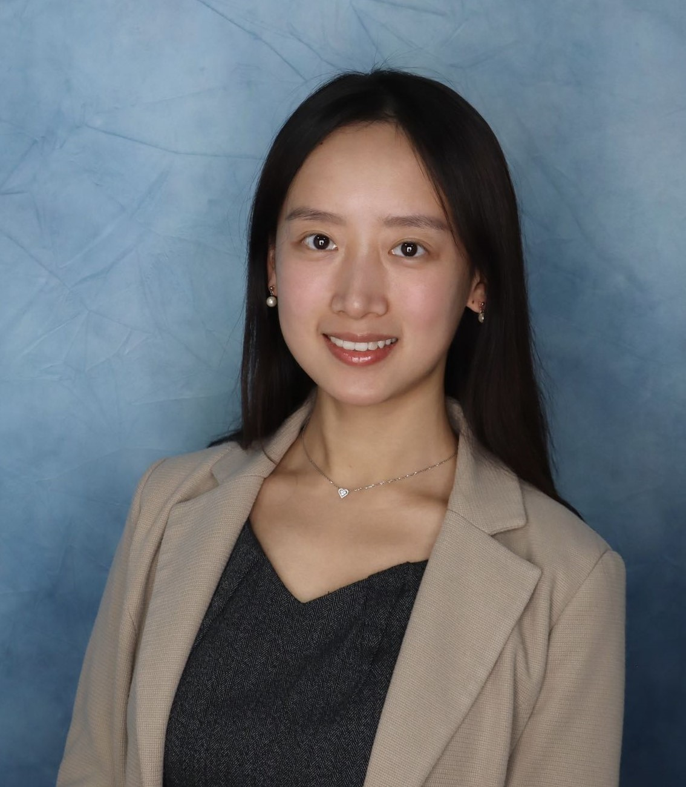

Lanxin Jiang
Assistant Professor of Accounting
College of Business, Stony Brook University
I study the intersection of artificial intelligence and accounting. My work explores how machine learning can improve auditing accuracy, detect financial misconduct, and advance ESG transparency — bridging traditional practices with emerging technologies.
Recent News
Research Highlights
Predicting Material Misstatements Using Machine Learning
We develop ML models that predict material misstatements with higher accuracy than traditional methods, offering a new tool for auditors and regulators.
Read paper →Towards Real-Time Financial Statement Fraud Detection
A framework for continuous, real-time fraud detection using machine learning on financial statement data, presented at the 2023 PCAOB Conference.
Using Machine Learning to Improve Accrual Estimates
Improving the validity of accounting accrual estimates through machine learning, addressing a core challenge in financial reporting quality.